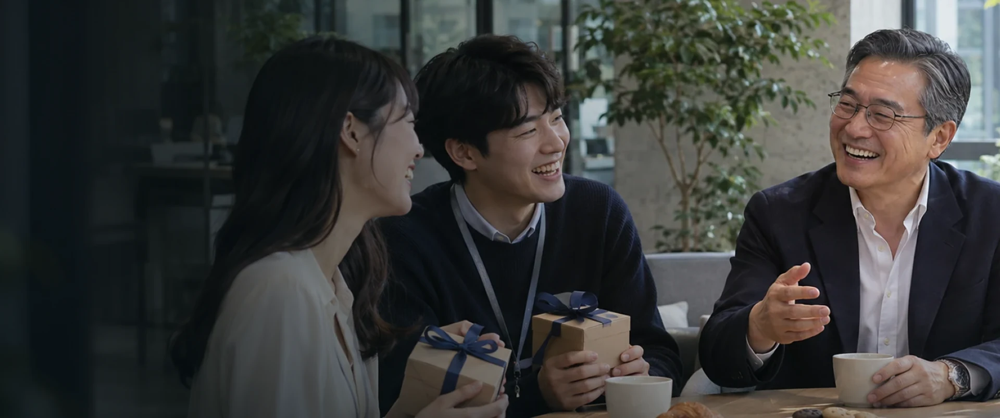
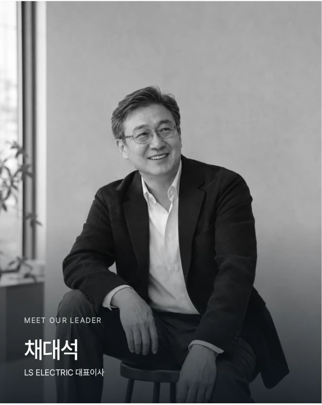
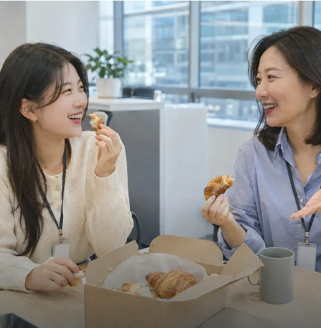
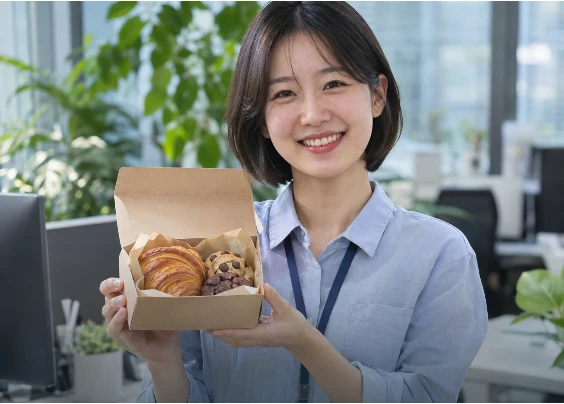
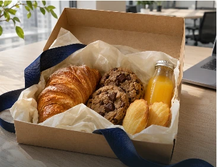
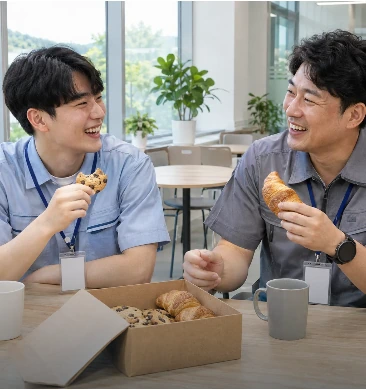
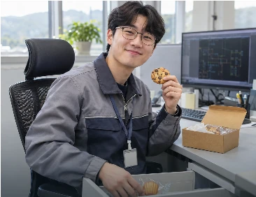
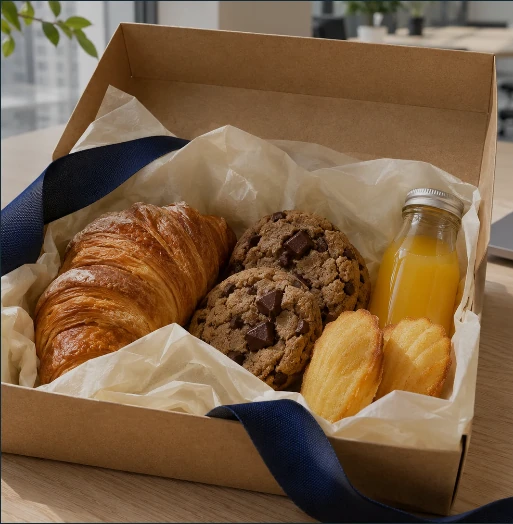
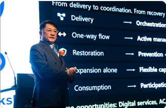

채대석 대표이사가
‘신입사원’에게 쏜다!
입사 첫 달, 신입사원에게 전한 웰컴 간식 박스
 AI 요약 | 채대석 대표이사의 신입사원 환영 인사
AI 요약 | 채대석 대표이사의 신입사원 환영 인사
채대석 대표이사가 입사 첫 달을 보내는 신입사원들에게 웰컴 간식 박스와 응원 편지를 보냈다. 5문 5답에서는 첫 출근의 기억과 현장을 직접 확인하는 업무 습관을 돌아보고, 모르는 것은 질문하고 작은 일에도 책임을 다하라는 조언을 전한다. 신입사원들은 동료와 간식을 나누며 한숨 돌리고 서로 가까워진 순간을 들려준다.
A LITTLE WELCOME
사원증을 목에 걸고도 출입구 앞에만 서면 한 번씩 멈칫하게 되는 입사 첫 달. 떨리는 마음을 안은 채 정신없는 하루를 보내고 있을 신입사원들에게 채대석 대표이사가 웰컴 간식 박스를 보냈습니다. 모든 게 낯선 신입사원들에게 그날의 간식 시간은 어떤 기억으로 남았을까요?

A LETTER TO YOU
함께 일하게 되어
반갑습니다.
신입사원 여러분께.
회사의 미래를 열어갈 여러분, 회사 생활은 조금씩 익숙해지고 있나요? 처음 만나는 동료들 이름을 익히고 새로운 일을 배우다 보면 하루가 금방 지나가죠.
한 달간 어떻게 지내셨는지 궁금하기도 하고, 응원의 마음도 전하고 싶어 소소한 간식 박스를 준비했습니다. 간식 드시며 잠시나마 쉬어 가셨으면 좋겠네요. 함께 일하게 되어 반갑습니다.
채대석 드림
인물·현장 사진은 촬영 구도와 분위기를 제안하는 시안용 AI 이미지입니다.
FIVE QUESTIONS
채대석 대표이사의
5문 5답 타임
일의 원칙부터 첫 출근의 기억까지.
조금 먼저 시작한 선배의 이야기를 듣습니다.
모르는 것은
부끄러워하지 말고
질문하세요.
Q1요즘 대표님이 가장 많은 시간을 쓰는 일은 무엇인가요?
요즘은 급변하는 글로벌 전력 시장의 흐름을 살피고, LS ELECTRIC이 앞으로 어떤 경쟁력을 갖춰야 할지 고민하는 데 많은 시간을 써요. 산업 성장과 함께 전력 인프라의 중요성이 그 어느 때보다 커지고 있죠. 우리가 가진 기술력과 경험을 바탕으로 새로운 기회를 만들어 내고 글로벌 시장에서 한 단계 더 도약할 수 있는 방향을 고민하고 있습니다.
Q2첫 출근 날, 지금도 기억나는 일화가 있나요?
그때의 설렘과 긴장감은 지금도 기억에 남습니다. 새로운 조직에서 인정받고 싶다는 마음과 함께 맡은 일을 잘 해낼 수 있을까 하는 걱정도 있었던 것 같죠. 돌이켜보면 처음부터 모든 걸 잘할 수는 없었습니다. 주변 동료와 선배들에게 배우고 직접 부딪히며 하나씩 익혀 간 시간이 지금의 저를 만들었다고 생각해요.
Q3신입 시절 가장 어려웠던 일은요?
업무에 대한 이해와 경험이 부족한 상태에서 스스로 답을 찾아야 하는 순간이 어려웠죠. 특히 회사 업무는 혼자 잘하는 것만으로 해결되지 않는 일이 많습니다. 여러 부서와 협업하고 서로 다른 의견을 조율하는 과정도 쉽지 않았죠.
Q4신입 때부터 지금까지 이어온 업무 습관이 있다면요?
어떤 일이든 현장을 살피고 기본과 원칙을 지키려는 습관입니다. 보고서나 숫자만으로는 알 수 없는 것이 현장에는 많이 있어요. 특히 우리 회사는 전력, 자동화 산업 특성상 품질과 안전이 무엇보다 중요합니다. 작은 부분이라도 직접 확인하고 끝까지 책임지는 자세는 지금까지도 중요하게 여기는 업무 원칙입니다.
Q5마지막으로 신입사원을 위한 회사 생활 꿀팁을 전해 주세요.
첫째, 모르는 것은 부끄러워하지 말고 질문하세요. 질문하는 만큼 배우고 성장할 수 있습니다. 둘째, 작은 일에도 책임감을 가지세요. 작은 업무를 대하는 태도가 결국 큰 업무를 맡을 수 있는 신뢰로 이어집니다. 셋째, 주변 동료들과 좋은 관계를 만들어 가세요. 회사 생활은 혼자 하는 것이 아니라 함께 성과를 만들어 가는 과정입니다.
마지막으로 한 가지 더 이야기하고 싶습니다. 여러분이 지금 배우고 경험하는 모든 것이 회사의 미래 경쟁력이 될 수 있습니다. 조급해하지 말고 자신만의 강점을 키워 나가세요. 여러분의 도전과 성장이 LS ELECTRIC의 더 큰 미래를 만들어 갈 것이라고 믿습니다.
WELCOME MOMENTS
간식 박스,
잘 받았습니다!
한 상자의 간식이 도착하고,
우리의 오후가 조금 더 다정해졌습니다.

함께 나누는 오후
“옆자리 선배한테도 하나 건넸는데 선배가 ‘나 신입 땐 오후만 되면 배고팠어’라고 하시더라고요. 덕분에 선배의 신입 시절 이야기까지 들었습니다. 간식 잘 먹었습니다 대표님!”
사업총괄)마케팅팀 · 이유림

응원까지, 잘 받았습니다
“간식도 좋았지만 대표님의 응원 한마디가 더 기억에 남네요. 회사에 오면 허둥지둥하기 바쁜데 먼저 반겨 주시는 말을 들으니 기분이 좋습니다. 감사합니다.”
CTO)디자인랩 · 윤상이

달콤한 재충전
“상자를 열자마자 그날 깔끔히 헤치웠습니다. 오후에 쏟아지는 졸음 때문에 많이 힘든데, 이날은 간식 먹으며 제대로 쉬고 제대로 일했습니다. 대표님 덕분에 뜻깊은 시간이었습니다.”
CPO)구매공정팀 CS파트 · 서유진

일 이야기 말고, 우리 이야기
“쉬는 시간에 사수 님이랑 간식을 나눠 먹었어요. 평소엔 제가 일 배우느라 질문만 하는데 그날은 사수 님과 다양한 이야기 두런두런 나눴네요. 덕분에 잠깐이나마 일 얘기 없이 웃고 쉬었어요. 감사합니다!”
청주)생산기술팀 양산파트 · 김민철

두 번 선물 받은 기분
“받자마자 몇 개는 서랍에 넣어 뒀어요. 며칠 뒤 정신없는 오후에 그게 생각나서 꺼내 먹었는데, 그때 한 번 더 선물 받은 기분이었습니다. 덕분에 두 번 잘 먹었습니다 대표님!”
생산/R&D)변압기QS팀 · 김강민
NEXT EVENT
강화영 이사가
‘워킹맘&대디’를 위해 쏜다!
공감과 소통의 달인, 강화영 이사가
워킹맘&대디를 위해 특별한 간식을 준비했습니다!
회사에서는 일하랴, 집에서는 육아하랴! 하루 24시간이 모자란 워킹맘&대디 여러분, 일과 육아 사이에서 고군분투하는 여러분의 이야기를 들려주세요.
공감 가득한 사연을 기다립니다!

이 이야기의 키워드
이번 이야기는 어떠셨나요?
6DISCOVER

구자균 회장, “AI 전력난 해법은 지능형 DC 배전”
아시아 첫 CIRED 기조연설에서 지능형 DC 플랫폼의 미래를 소개합니다.

LS ELECTRIC의 역사를 가장 빠르게 살펴보는 법
LS ELECTRIC의 기업사를 6분으로 정리한 영상입니다.

숫자 너머의 시장을 읽고, 가격을 설계하다
사업총괄)마케팅팀 가격·데이터 Part